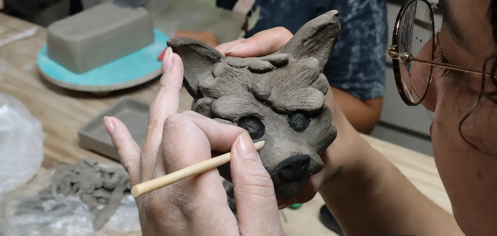
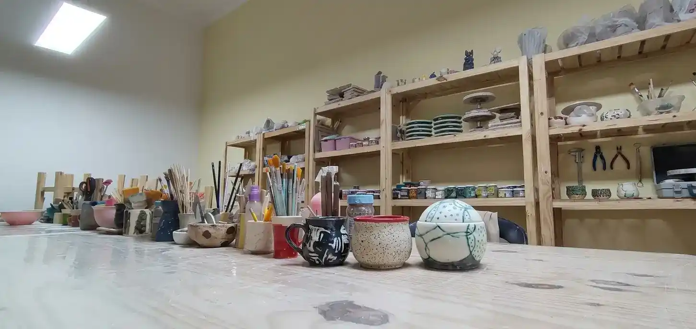
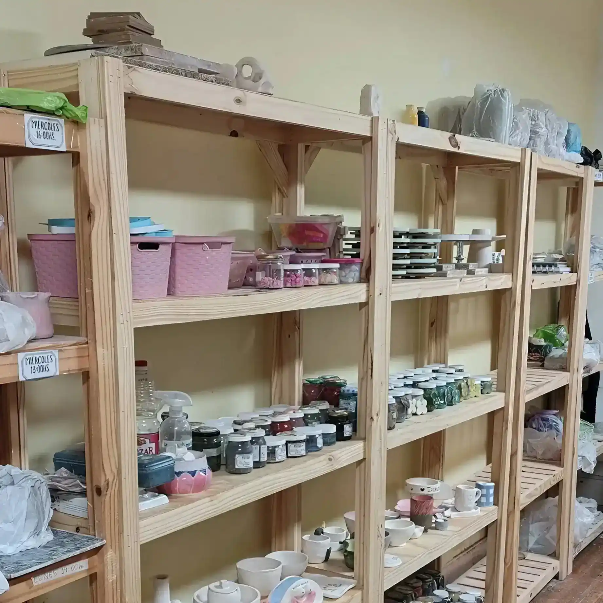
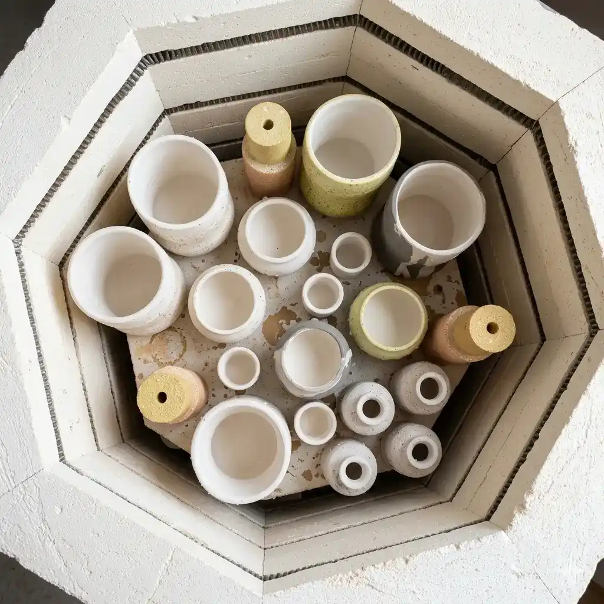

Estamos en Caballito, en el límite con Almagro, Buenos Aires. Artesana del Barro es un taller de cerámica donde podés hacer cursos y clases de modelado manual y alfarería en torno, con acompañamiento paso a paso, aunque nunca hayas trabajado con arcilla. Estamos a 2 cuadras del Subte A —Río de Janeiro— y a 1 cuadra del Parque Rivadavia, con fácil acceso desde distintos barrios de CABA / Capital Federal.
Alumnas de Artesana del Barro, Caballito.




Estamos en el corazón de Caballito, en el límite con Almagro, Buenos Aires. Fácil acceso en subte, colectivo o caminando. Recibimos alumnas de Palermo, Villa Crespo, Boedo, Flores, Parque Chacabuco, San Cristóbal y Balvanera.
A 2 cuadras de Subte A - Río de Janeiro · A 1 cuadra de Parque Rivadavia · Caballito, límite con Almagro, CABA.
Lunes a Viernes: 09:00 - 20:00hs
Sábado: 11:00 - 19:00hs
Domingo: Cerrado
+54 9 11 5620-6435 (WhatsApp) · artesanadelbarro@gmail.com
⏱️ Respondemos el mismo día.
¿Ya viste los planes y horarios?
Ofrecemos clases de lunes a sábado en turnos de mañana y tarde/noche. De lunes a viernes de 9:00 a 20:00hs, y los sábados de 11:00 a 19:00hs. Consultá la disponibilidad exacta en nuestra grilla de horarios.
Nuestros planes mensuales arrancan desde $79.000 (Plan Taller, modelado manual) y $90.000 (Plan Fusión, torno + mesa). Ambos incluyen pasta cerámica, herramientas, esmaltes, pigmentos y horneadas. Sin costos ocultos.
Bizcocho (primera quema) y esmaltado en loza (1.060°C) y gres (Cono 5), en nuestro horno de 70 litros. Disponible para ceramistas independientes de toda CABA.
En Caballito, en el límite con Almagro, CABA. A 2 cuadras de la estación Río de Janeiro (Subte A) y a 1 cuadra del Parque Rivadavia. Accesible desde Palermo, Villa Crespo, Boedo, Flores, San Cristóbal y Balvanera.
No, ninguna. Nuestras clases están diseñadas para principiantes y también para quienes ya tienen experiencia. Las profesoras te guían paso a paso en cada técnica.
La producción es ilimitada, pero para garantizar una cocción óptima el tamaño máximo permitido por pieza es de 18cm.
Sí, Artesana del Barro está en Caballito, límite con Almagro, a 2 cuadras del Subte A (Río de Janeiro). Recibimos alumnas de toda CABA: Palermo, Villa Crespo, Boedo, Flores, San Cristóbal y Balvanera.
Escribinos por WhatsApp y te ayudamos a elegir tu horario y plan ideal.